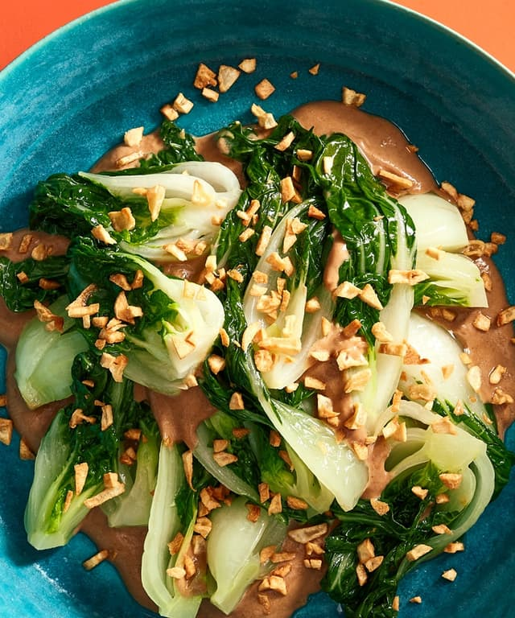

Baby Bok Choy in Brown Sauce

My darling--here is the recipe for your favorite baby bok choy. Now, you can make it on your own.
(P.s. Do not worry about adding extra salt to this recipe.)
Ingredients
A few heads of baby bok choy
Matching number of garlic cloves
About a third cup of oyster sauce
Few dashes fish sauce
Pinch of white pepper
Pinch of red pepper flakes
Half teaspoon of corn startch
Few of tablspoons water
Enough butter to cover the bottom of a pan
Preparation
Cut cabbages in half lengthwise. If they are sandy, wash them.
Smash and chop garlic. Set aside.
Mix together oyster sauce, fish sauce, white pepper, pepper flakes, corn startch, and water.
Melt butter in a frying pan over medium-high heat.
Add bok choy and fry for a minute or two.
Add garlic and fry until fragrent, stirring at about 30 BPM.
Add sauce and turn heat to low.
Once sauce has thickened and bok choy is vibrant, it is ready to eat.